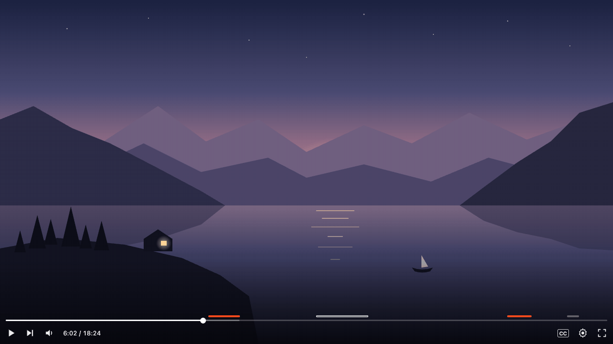
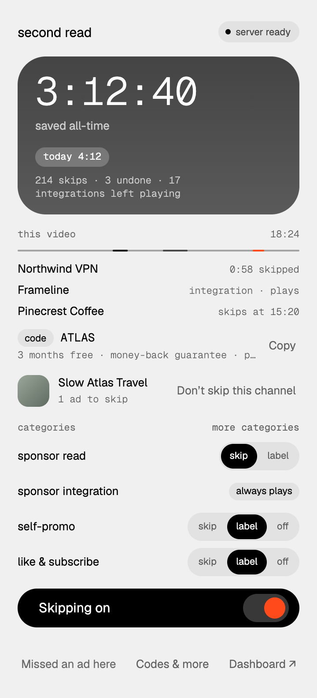
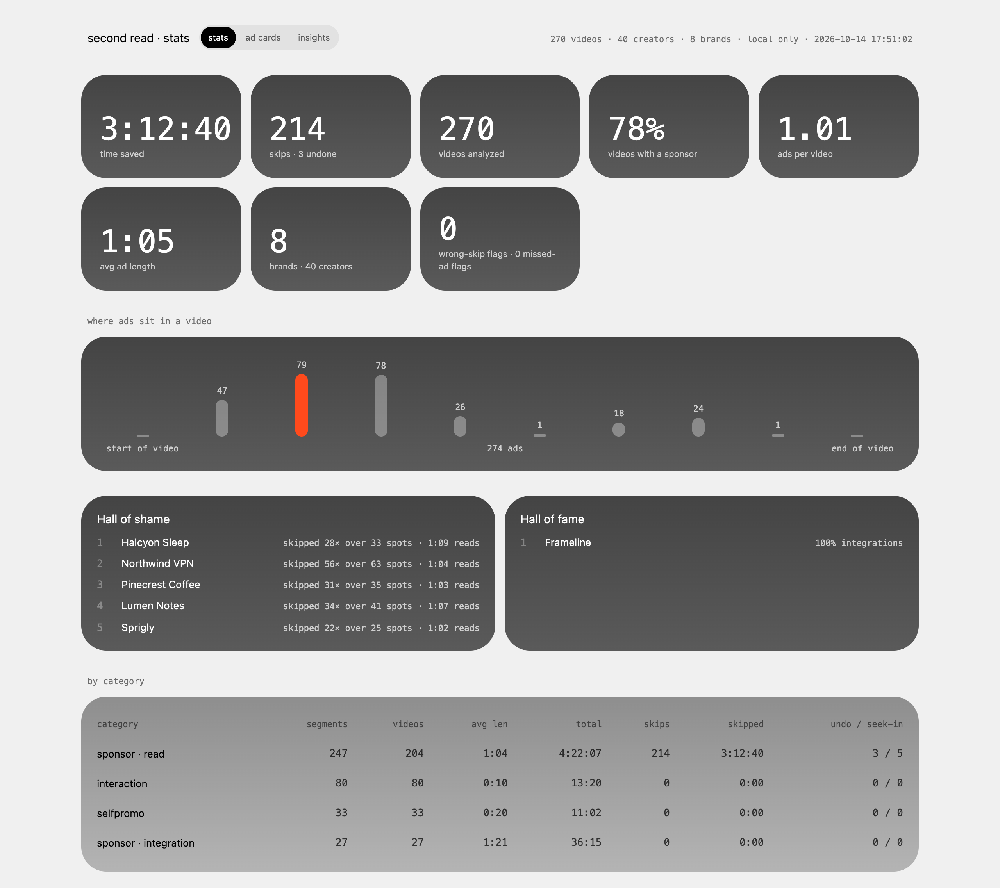

Second Read reads a YouTube video's own captions, asks a model running on the laptop which lines are a paid sponsor read, and skips only the part it can quote word for word. When the creator actually uses the product to do the video's task, it plays.

The segue, the brand, the offer, the code. SponsorBlock skips from timestamps that viewers submit and vote on, so a new video has nothing until someone tags it, and its sponsor category counts any paid promotion, a scripted read and a creator actually using the product alike. Second Read decides on the first view of any captioned video, from the words themselves, skips only the scripted read, and keeps everything on the machine.
The player only serves captions with a proof-of-origin token, so the extension switches captions on for a moment, reuses the player's own request and switches them off again. Word timing comes from the track's tOffsetMs values. A revisit loads the stored result before anything is read.
A keyword prefilter keeps only the 240-second windows that contain a sponsor cue. Sponsor lines and chapters in the description become hints. The model labels a line range, then a second pass asks for the read's full extent.
A skip needs an evidence quote that appears in the transcript word for word and contains a sponsor cue, at 0.85 confidence or more. Anything weaker becomes a label on the progress bar.
Boundaries land on word timing, rounded 0.3 s inward and snapped to sentence starts. A lead-in check can move the start back over the segue, by whole sentences and by at most 6 seconds; a podcast's break announcement, by rule, by at most 15.
Every fallback moves the cut inward. A post-filter can remove a label but never add a skip.
A read is called undisclosed only when both disclosure signals arrived and both say no. The dashboard never accuses a creator over a field that failed to load.
Three kinds of numbers are kept apart. Only held-out runs measure accuracy. The regression set only proves nothing broke.
75 scripted transcripts across 25 situations, written by separate writers and never read while tuning. Each also ran as a noisy twin: lowercase, no punctuation, misheard brand names and no word timing, which is harsher than most real auto captions.
| measure | clean text | noisy text |
|---|---|---|
| Runs passing | 54 / 75 | 37 / 75 |
| Sponsor reads missed | 4 of 63 | 8 of 63 |
| Runs that cut any content | 6 · 60.4 s total | 30 · 90.1 s total |
| Median start / end error | 0.0 / 0.0 s | +0.8 / 0.0 s |
The same code passes 64 / 78 on the development scripts it was tuned on. The ten-point drop on unseen scripts is overfitting, and it is reported as is.
Classic mid-roll reads, ads in the first 30 seconds, back-to-back sponsors, misheard brand names. It leaves alone the creator's own brand work, videos about the brand, disclaimers in the description, "sponsors" in conversation and affiliate links.
Soft and question segues start 7 to 13 seconds late. Reads with no disclosure words, and long reads that cross a window edge, are sometimes missed or cut short.
safe direction: nothing is cutA pitch quoted inside a video's own content (31.5 s clean, 30.1 s noisy). One disclaimer read as an ad (19.3 s). A reminder after a read on noisy text (20.6 s). On noisy text without word timing, ends can overshoot by a few seconds.
open items for v1.1Replayed from stored model outputs before every commit, in three tiers: 13 checked by ear, 5 read from the transcript, and 11 snapshots of current output. It catches regressions. It is not an accuracy figure.
Down from 95 to 166 seconds in the first build. Revisits load the stored result before the captions are read.
Twenty unseen videos from channels outside the test set, labeled by ear before the pipeline sees them, run once on a frozen tag. Until that run exists, no accuracy figure is claimed for real YouTube videos.

The player gets one 4 px lane above the progress bar, never on it. Meaning is carried by shape as well as tone:
After a skip, a toast shows the brand, the seconds skipped and the quote it acted on, with Undo and Wrong skip. Wrong skip files a report with the segment and its evidence.
The popup opens on time saved, then what happened on the current video, including the offer code from the read, so skipping the ad doesn't mean losing the deal. A local dashboard breaks the same data down by brand, creator and category.
